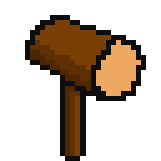
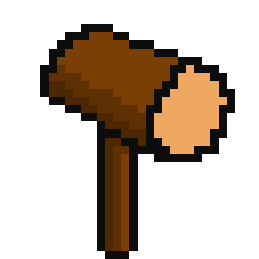
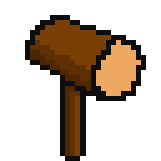

你在教堂找到了Ubhal, Ubhal正和教友圍在一起憤怒的禱告 You find Ubhal at the church. He is praying angrily with other members...
這似乎不會停止... This prayer seems like it will never stop...
"教主被害死了! 教主被害死了! 我們誓言要找出兇手!" "The god has been murdered! The god has been murdered! We vow to find the criminal!"
教主在兩周前遭到綁架，現在沒有人知道教主身在何處... The god was kidnapped two weeks ago, and now no one knows where the god is...
唯一的線索只有一張教主被抓走前一天晚餐與他的門徒的合照... The only clue is a photo of the god having dinner with his disciples the day before he was kidnapped...
原來兇手正是Ghrian，他被移送法辦了 It turns out the criminal was Ghrian, and he has been taken into custody for prosecution...
獲得 Ubhal的線索 Get the clues from Ubhal
獲得 神啟的線索 Get the clues from the holy
1. 有五棟房子 (sage)
2. Ubhal住在石頭屋裡 (Ubhal)
3. Oidhche的幸運物是槌子 (Craobh)
4. 住在小木屋裡的小矮人喝水果酒 (mar) The dwarf lives in caban drink fruit wine
5. Mar喝麥酒 (ubhal) Mar drink Ale
6. 小木屋在Craobh家的右邊一棟 (mar) The caban house is immediately to the right of the craobh house.
7. 讀聖經的小矮人的幸運物是石頭 (craobh) The dwarf reading dible owns stone.
8. 讀唐吉訶德的小矮人住在鳥巢裡 (ghrian) The novel Donxicote is in the nead house.
9. 住中間房子的小矮人喝莓果汁 (ghrian) Berry juice is drunk in the middle house.
10. Craobh住在最左邊的房子 (craobh) Craobh lives in the first house.
11. 讀The republic的小矮人住在幸運物是樹葉的小矮人的旁邊 (sage) The man who read The perublic lives in the house next to the man with the leaf.
12. 讀唐吉訶德的小矮人住在幸運物是鏟子的小矮人家的旁邊 (sage) Donxicote is read in the house next to the house where there is a shovel.
13. 讀The Illiad的小矮人喝樹汁 (ghrian) The illiad smoker drinks tree juice.
14. Ghrian喜歡讀的書是物種的起源 (mar) Ghrian reads the origin of the species
15. Craobh住在石頭屋旁邊 (ubhal) Craobh lives next to the blue Clach mhor.
Items

The clue from Mar. 來自Mar的線索
The clue from Ghrian. 來自Ghrian的線索
A solid hammer. 一把堅固槌子
The piece of gold with an unknown purpose. 用途不明的黃金
The clue from Craobh. 來自Craobh的線索
讀唐吉訶德的小矮人住在鳥巢裡. The dwarf who reads Don Quixote lives in a nest.
住中間房子的小矮人喝莓果汁. The dwarf who lives in the middle position drinks berry juice
讀The Illiad的小矮人喝樹汁. The dwarf who reads The Iliad drinks tree sap
住在小木屋裡的小矮人喝水果酒. The dwarf who lives in the cabin drinks fruit wine
小木屋在樹洞屋的右邊一棟. The cabin is to the right of the tree house
Ghrian喜歡讀的書是物種的起源. Ghrian's favorite book is The Origin of Species
似乎沒有作用...
It doesn't work...
似乎沒有作用 it doesn't work now.
Oidhche的幸運物是槌子. Oidhche's lucky charm is a hammer
讀聖經的小矮人的幸運物是石頭. The dwarf who reads the Bible's lucky charm is a stone
我住在最左邊的房子. I live in the house on the far left


 
